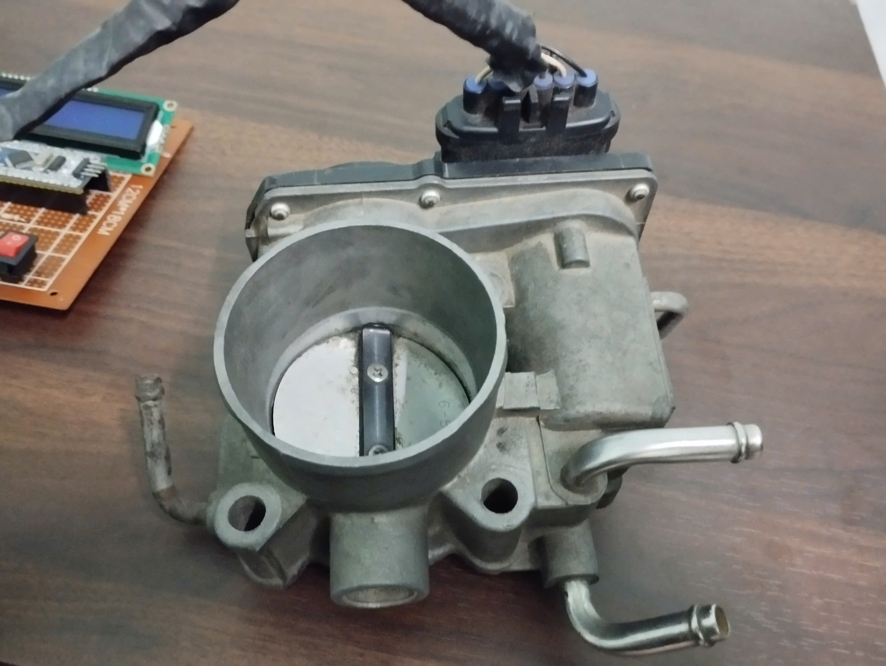
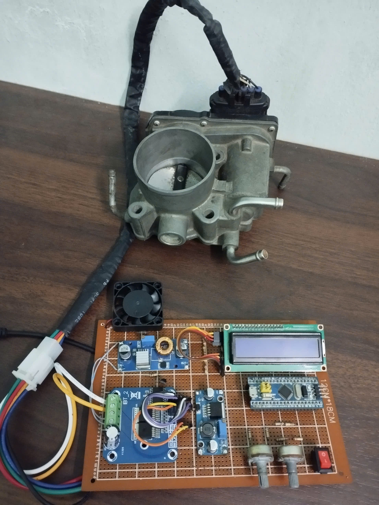
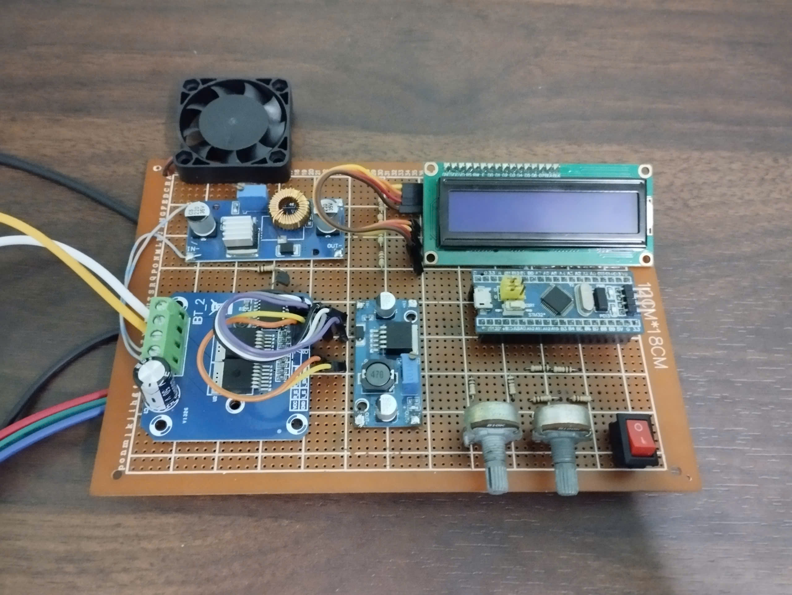

← Back to Projects
Project · Completed
Throttle Control and Status Updates Using STM32 Register-Level Programming
Overview
Bare-metal firmware for the STM32F103C8 that reads a throttle position sensor and engine temperature, drives a temperature-based cooling fan, and shows system status on an LCD. Written at register level without HAL or RTOS.
Key Features
- Throttle position and temperature sampling with ADC + DMA
- PWM fan control based on temperature
- Status display on I2C LCD (PCF8574)
- Push button (PA0) to enable or disable the operating mode
Video Demo
System Architecture
Project Photos



Results
The STM32F103C8 system reads throttle position and engine temperature using ADC with DMA. The microcontroller uses temperature data to control a cooling fan through PWM and displays system status on an I2C LCD. The firmware is written in a bare-metal style, using direct register access without HAL or an RTOS.